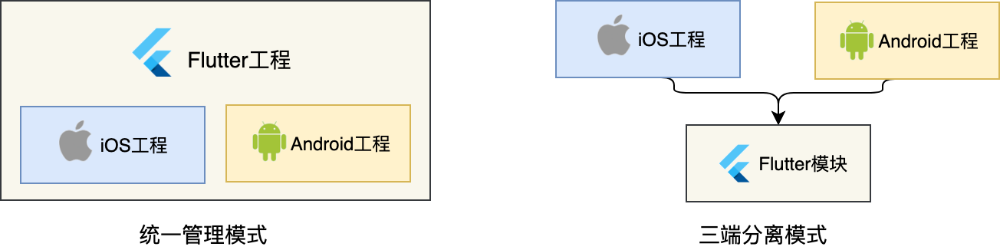
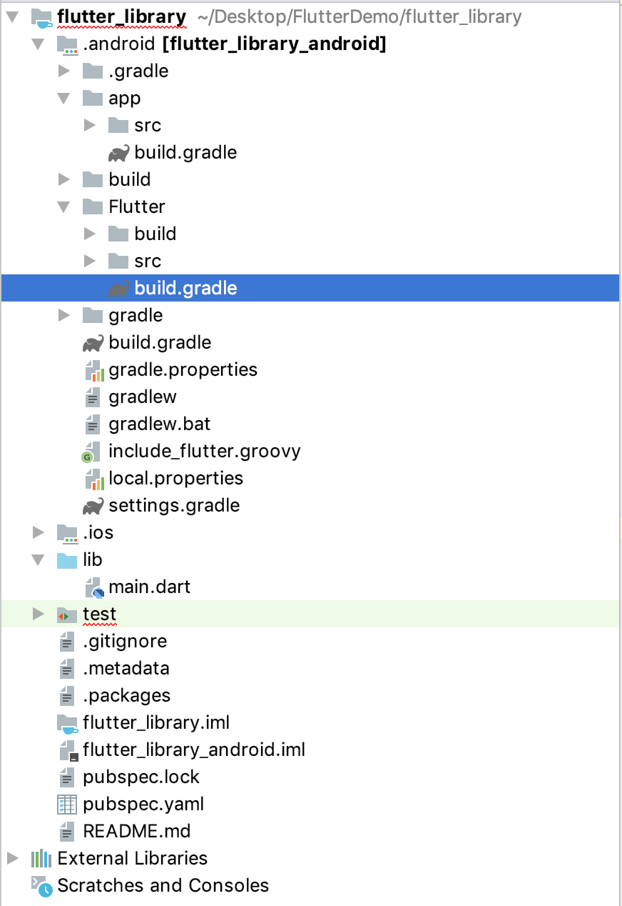
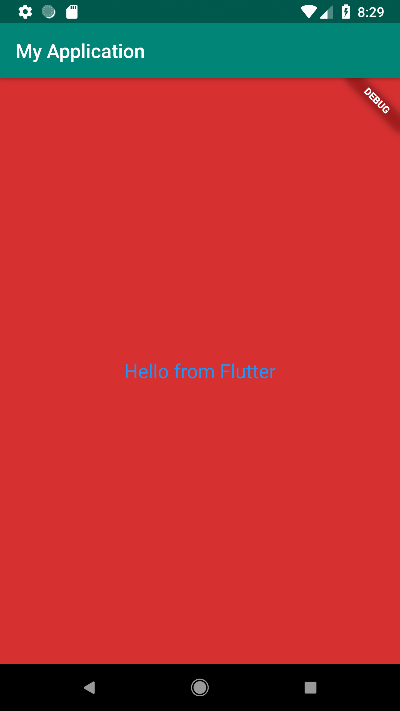

- 00 开篇词 为什么每一位大前端从业者都应该学习Flutter？.md.html
- 01 预习篇 · 从0开始搭建Flutter工程环境.md.html
- 02 预习篇 · Dart语言概览.md.html
- 03 深入理解跨平台方案的历史发展逻辑.md.html
- 04 Flutter区别于其他方案的关键技术是什么？.md.html
- 05 从标准模板入手，体会Flutter代码是如何运行在原生系统上的.md.html
- 06 基础语法与类型变量：Dart是如何表示信息的？.md.html
- 07 函数、类与运算符：Dart是如何处理信息的？.md.html
- 08 综合案例：掌握Dart核心特性.md.html
- 09 Widget，构建Flutter界面的基石.md.html
- 10 Widget中的State到底是什么？.md.html
- 11 提到生命周期，我们是在说什么？.md.html
- 12 经典控件（一）：文本、图片和按钮在Flutter中怎么用？.md.html
- 13 经典控件（二）：UITableView_ListView在Flutter中是什么？.md.html
- 14 经典布局：如何定义子控件在父容器中排版的位置？.md.html
- 15 组合与自绘，我该选用何种方式自定义Widget？.md.html
- 16 从夜间模式说起，如何定制不同风格的App主题？.md.html
- 17 依赖管理（一）：图片、配置和字体在Flutter中怎么用？.md.html
- 18 依赖管理（二）：第三方组件库在Flutter中要如何管理？.md.html
- 19 用户交互事件该如何响应？.md.html
- 20 关于跨组件传递数据，你只需要记住这三招.md.html
- 21 路由与导航，Flutter是这样实现页面切换的.md.html
- 22 如何构造炫酷的动画效果？.md.html
- 23 单线程模型怎么保证UI运行流畅？.md.html
- 24 HTTP网络编程与JSON解析.md.html
- 25 本地存储与数据库的使用和优化.md.html
- 26 如何在Dart层兼容Android_iOS平台特定实现？（一）.md.html
- 27 如何在Dart层兼容Android_iOS平台特定实现？（二）.md.html
- 28 如何在原生应用中混编Flutter工程？.md.html
- 29 混合开发，该用何种方案管理导航栈？.md.html
- 30 为什么需要做状态管理，怎么做？.md.html
- 31 如何实现原生推送能力？.md.html
- 32 适配国际化，除了多语言我们还需要注意什么_.md.html
- 33 如何适配不同分辨率的手机屏幕？.md.html
- 34 如何理解Flutter的编译模式？.md.html
- 35 Hot Reload是怎么做到的？.md.html
- 36 如何通过工具链优化开发调试效率？.md.html
- 37 如何检测并优化Flutter App的整体性能表现？.md.html
- 38 如何通过自动化测试提高交付质量？.md.html
- 39 线上出现问题，该如何做好异常捕获与信息采集？.md.html
- 40 衡量Flutter App线上质量，我们需要关注这三个指标.md.html
- 41 组件化和平台化，该如何组织合理稳定的Flutter工程结构？.md.html
- 42 如何构建高效的Flutter App打包发布环境？.md.html
- 43 如何构建自己的Flutter混合开发框架（一）？.md.html
- 44 如何构建自己的Flutter混合开发框架（二）？.md.html
- 特别放送 温故而知新，与你说说专栏的那些思考题.md.html
- 结束语 勿畏难，勿轻略.md.html
- 捐赠
28 如何在原生应用中混编Flutter工程？
你好，我是陈航。今天，我来和你聊聊如何在原生应用中接入Flutter。
在前面两篇文章中，我与你分享了如何在Dart层引入Android/iOS平台特定的能力，来提升App的功能体验。
使用Flutter从头开始写一个App，是一件轻松惬意的事情。但，对于成熟产品来说，完全摒弃原有App的历史沉淀，而全面转向Flutter并不现实。用Flutter去统一iOS/Android技术栈，把它作为已有原生App的扩展能力，通过逐步试验有序推进从而提升终端开发效率，可能才是现阶段Flutter最具吸引力的地方。
那么，Flutter工程与原生工程该如何组织管理？不同平台的Flutter工程打包构建产物该如何抽取封装？封装后的产物该如何引入原生工程？原生工程又该如何使用封装后的Flutter能力？
这些问题使得在已有原生App中接入Flutter看似并不是一件容易的事情。那接下来，我就和你介绍下如何在原生App中以最自然的方式接入Flutter。
准备工作
既然是要在原生应用中混编Flutter，相信你一定已经准备好原生应用工程来实施今天的改造了。如果你还没有准备好也没关系，我会以一个最小化的示例和你演示这个改造过程。
首先，我们分别用Xcode与Android Studio快速建立一个只有首页的基本工程，工程名分别为iOSDemo与AndroidDemo。
这时，Android工程就已经准备好了；而对于iOS工程来说，由于基本工程并不支持以组件化的方式管理项目，因此我们还需要多做一步，将其改造成使用CocoaPods管理的工程，也就是要在iOSDemo根目录下创建一个只有基本信息的Podfile文件：
use_frameworks!
platform :ios, '8.0'
target 'iOSDemo' do
#todo
end
然后，在命令行输入pod install后，会自动生成一个iOSDemo.xcworkspace文件，这时我们就完成了iOS工程改造。
Flutter混编方案介绍
如果你想要在已有的原生App里嵌入一些Flutter页面，有两个办法：
- 将原生工程作为Flutter工程的子工程，由Flutter统一管理。这种模式，就是统一管理模式。
- 将Flutter工程作为原生工程共用的子模块，维持原有的原生工程管理方式不变。这种模式，就是三端分离模式。

图1 Flutter混编工程管理方式
由于Flutter早期提供的混编方式能力及相关资料有限，国内较早使用Flutter混合开发的团队大多使用的是统一管理模式。但是，随着功能迭代的深入，这种方案的弊端也随之显露，不仅三端（Android、iOS、Flutter）代码耦合严重，相关工具链耗时也随之大幅增长，导致开发效率降低。
所以，后续使用Flutter混合开发的团队陆续按照三端代码分离的模式来进行依赖治理，实现了Flutter工程的轻量级接入。
除了可以轻量级接入，三端代码分离模式把Flutter模块作为原生工程的子模块，还可以快速实现Flutter功能的“热插拔”，降低原生工程的改造成本。而Flutter工程通过Android Studio进行管理，无需打开原生工程，可直接进行Dart代码和原生代码的开发调试。
三端工程分离模式的关键是抽离Flutter工程，将不同平台的构建产物依照标准组件化的形式进行管理，即Android使用aar、iOS使用pod。换句话说，接下来介绍的混编方案会将Flutter模块打包成aar和pod，这样原生工程就可以像引用其他第三方原生组件库那样快速接入Flutter了。
听起来是不是很兴奋？接下来，我们就开始正式采用三端分离模式来接入Flutter模块吧。
集成Flutter
我曾在前面的文章中提到，Flutter的工程结构比较特殊，包括Flutter工程和原生工程的目录（即iOS和Android两个目录）。在这种情况下，原生工程就会依赖于Flutter相关的库和资源，从而无法脱离父目录进行独立构建和运行。
原生工程对Flutter的依赖主要分为两部分：
- Flutter库和引擎，也就是Flutter的Framework库和引擎库；
- Flutter工程，也就是我们自己实现的Flutter模块功能，主要包括Flutter工程lib目录下的Dart代码实现的这部分功能。
在已经有原生工程的情况下，我们需要在同级目录创建Flutter模块，构建iOS和Android各自的Flutter依赖库。这也很好实现，Flutter就为我们提供了这样的命令。我们只需要在原生项目的同级目录下，执行Flutter命令创建名为flutter_library的模块即可：
Flutter create -t module flutter_library
这里的Flutter模块，也是Flutter工程，我们用Android Studio打开它，其目录如下图所示：

图2 Flutter模块工程结构
可以看到，和传统的Flutter工程相比，Flutter模块工程也有内嵌的Android工程与iOS工程，因此我们可以像普通工程一样使用Android Studio进行开发调试。
仔细查看可以发现，Flutter模块有一个细微的变化：Android工程下多了一个Flutter目录，这个目录下的build.gradle配置就是我们构建aar的打包配置。这就是模块工程既能像Flutter传统工程一样使用Android Studio开发调试，又能打包构建aar与pod的秘密。
实际上，iOS工程的目录结构也有细微变化，但这个差异并不影响打包构建，因此我就不再展开了。
然后，我们打开main.dart文件，将其逻辑更新为以下代码逻辑，即一个写着“Hello from Flutter”的全屏红色的Flutter Widget：
import 'package:flutter/material.dart';
import 'dart:ui';
void main() => runApp(_widgetForRoute(window.defaultRouteName));//独立运行传入默认路由
Widget _widgetForRoute(String route) {
switch (route) {
default:
return MaterialApp(
home: Scaffold(
backgroundColor: const Color(0xFFD63031),//ARGB红色
body: Center(
child: Text(
'Hello from Flutter', //显示的文字
textDirection: TextDirection.ltr,
style: TextStyle(
fontSize: 20.0,
color: Colors.blue,
),
),
),
),
);
}
}
注意：我们创建的Widget实际上是包在一个switch-case语句中的。这是因为封装的Flutter模块一般会有多个页面级Widget，原生App代码则会通过传入路由标识字符串，告诉Flutter究竟应该返回何种Widget。为了简化案例，在这里我们忽略标识字符串，统一返回一个MaterialApp。
接下来，我们要做的事情就是把这段代码编译打包，构建出对应的Android和iOS依赖库，实现原生工程的接入。
现在，我们首先来看看Android工程如何接入。
Android模块集成
之前我们提到原生工程对Flutter的依赖主要分为两部分，对应到Android平台，这两部分分别是：
- Flutter库和引擎，也就是icudtl.dat、libFlutter.so，还有一些class文件。这些文件都封装在Flutter.jar中。
- Flutter工程产物，主要包括应用程序数据段isolate_snapshot_data、应用程序指令段isolate_snapshot_instr、虚拟机数据段vm_snapshot_data、虚拟机指令段vm_snapshot_instr、资源文件Flutter_assets。
搞清楚Flutter工程的Android编译产物之后，我们对Android的Flutter依赖抽取步骤如下：
首先在Flutter_library的根目录下，执行aar打包构建命令：
Flutter build apk --debug
这条命令的作用是编译工程产物，并将Flutter.jar和工程产物编译结果封装成一个aar。你很快就会想到，如果是构建release产物，只需要把debug换成release就可以了。
其次，打包构建的flutter-debug.aar位于.android/Flutter/build/outputs/aar/目录下，我们把它拷贝到原生Android工程AndroidDemo的app/libs目录下，并在App的打包配置build.gradle中添加对它的依赖:
...
repositories {
flatDir {
dirs 'libs' // aar目录
}
}
android {
...
compileOptions {
sourceCompatibility 1.8 //Java 1.8
targetCompatibility 1.8 //Java 1.8
}
...
}
dependencies {
...
implementation(name: 'flutter-debug', ext: 'aar')//Flutter模块aar
...
}
Sync一下，Flutter模块就被添加到了Android项目中。
再次，我们试着改一下MainActivity.java的代码，把它的contentView改成Flutter的widget：
protected void onCreate(Bundle savedInstanceState) {
super.onCreate(savedInstanceState);
View FlutterView = Flutter.createView(this, getLifecycle(), "defaultRoute"); //传入路由标识符
setContentView(FlutterView);//用FlutterView替代Activity的ContentView
}
最后点击运行，可以看到一个写着“Hello from Flutter”的全屏红色的Flutter Widget就展示出来了。至此，我们完成了Android工程的接入。

图3 Android工程接入示例
iOS模块集成
iOS工程接入的情况要稍微复杂一些。在iOS平台，原生工程对Flutter的依赖分别是：
- Flutter库和引擎，即Flutter.framework；
- Flutter工程的产物，即App.framework。
iOS平台的Flutter模块抽取，实际上就是通过打包命令生成这两个产物，并将它们封装成一个pod供原生工程引用。
类似地，首先我们在Flutter_library的根目录下，执行iOS打包构建命令：
Flutter build ios --debug
这条命令的作用是编译Flutter工程生成两个产物：Flutter.framework和App.framework。同样，把debug换成release就可以构建release产物（当然，你还需要处理一下签名问题）。
其次，在iOSDemo的根目录下创建一个名为FlutterEngine的目录，并把这两个framework文件拷贝进去。iOS的模块化产物工作要比Android多一个步骤，因为我们需要把这两个产物手动封装成pod。因此，我们还需要在该目录下创建FlutterEngine.podspec，即Flutter模块的组件定义：
Pod::Spec.new do |s|
s.name = 'FlutterEngine'
s.version = '0.1.0'
s.summary = 'XXXXXXX'
s.description = <<-DESC
TODO: Add long description of the pod here.
DESC
s.homepage = 'https://github.com/xx/FlutterEngine'
s.license = { :type => 'MIT', :file => 'LICENSE' }
s.author = { 'chenhang' => '[email protected]' }
s.source = { :git => "", :tag => "#{s.version}" }
s.ios.deployment_target = '8.0'
s.ios.vendored_frameworks = 'App.framework', 'Flutter.framework'
end
pod lib lint一下，Flutter模块组件就已经做好了。趁热打铁，我们再修改Podfile文件把它集成到iOSDemo工程中：
...
target 'iOSDemo' do
pod 'FlutterEngine', :path => './'
end
pod install一下，Flutter模块就集成进iOS原生工程中了。
再次，我们试着修改一下AppDelegate.m的代码，把window的rootViewController改成FlutterViewController：
- (BOOL)application:(UIApplication *)application didFinishLaunchingWithOptions:(NSDictionary *)launchOptions
{
self.window = [[UIWindow alloc] initWithFrame:[UIScreen mainScreen].bounds];
FlutterViewController *vc = [[FlutterViewController alloc]init];
[vc setInitialRoute:@"defaultRoute"]; //路由标识符
self.window.rootViewController = vc;
[self.window makeKeyAndVisible];
return YES;
}
最后点击运行，一个写着“Hello from Flutter”的全屏红色的Flutter Widget也展示出来了。至此，iOS工程的接入我们也顺利搞定了。
图4 iOS工程接入示例
总结
通过分离Android、iOS和Flutter三端工程，抽离Flutter库和引擎及工程代码为组件库，以Android和iOS平台最常见的aar和pod形式接入原生工程，我们就可以低成本地接入Flutter模块，愉快地使用Flutter扩展原生App的边界了。
但，我们还可以做得更好。
如果每次通过构建Flutter模块工程，都是手动搬运Flutter编译产物，那很容易就会因为工程管理混乱导致Flutter组件库被覆盖，从而引发难以排查的Bug。而要解决此类问题的话，我们可以引入CI自动构建框架，把Flutter编译产物构建自动化，原生工程通过接入不同版本的构建产物，实现更优雅的三端分离模式。
而关于自动化构建，我会在后面的文章中和你详细介绍，这里就不再赘述了。
接下来，我们简单回顾一下今天的内容。
原生工程混编Flutter的方式有两种。一种是，将Flutter工程内嵌Android和iOS工程，由Flutter统一管理的集中模式；另一种是，将Flutter工程作为原生工程共用的子模块，由原生工程各自管理的三端工程分离模式。目前，业界采用的基本都是第二种方式。
而对于三端工程分离模式最主要的则是抽离Flutter工程，将不同平台的构建产物依照标准组件化的形式进行管理，即：针对Android平台打包构建生成aar，通过build.gradle进行依赖管理；针对iOS平台打包构建生成framework，将其封装成独立的pod，并通过podfile进行依赖管理。
我把今天分享所涉及到的知识点打包到了GitHub（flutter_module_page、iOS_demo、Android_Demo）中，你可以下载下来，反复运行几次，加深理解与记忆。
思考题
最后，我给你下留一个思考题吧。
对于有资源依赖的Flutter模块工程而言，其打包构建的产物，以及抽离Flutter组件库的过程会有什么不同吗？
欢迎你在评论区给我留言分享你的观点，我会在下一篇文章中等待你！感谢你的收听，也欢迎你把这篇文章分享给更多的朋友一起阅读。
© 2019 - 2023 Liangliang Lee. Powered by gin and hexo-theme-book.